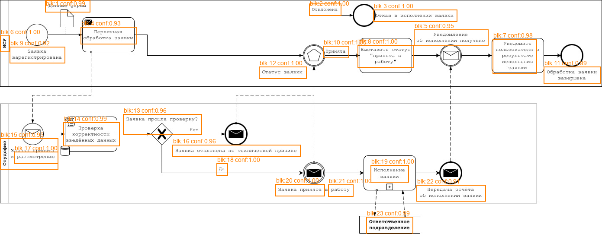
| block_id | confidence | crop | text |
|---|---|---|---|
| 1 | 0.994 | 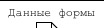 | Данные формы |
| 2 | 1.000 | 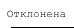 | Отклонена |
| 3 | 0.998 | 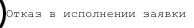 | Ютказ исполнении заявки |
| 4 | 0.934 | 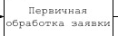 | Первичная ботка заявки обраб |
| 5 | 0.946 | 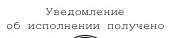 | Уведомление об исполнении получено |
| 6 | 0.999 | 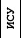 | ИСУ |
| 7 | 0.980 | 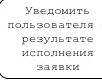 | Уведомить пользователя результате ислолнения заявки |
| 8 | 0.999 | 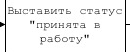 | Выставить статус принята работу |
| 9 | 0.916 | 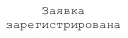 | Заявка яаретистрирована |
| 10 | 1.000 | 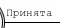 | Принята |
| 11 | 0.986 | 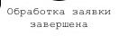 | Обработка заявки завершена |
| 12 | 0.999 | 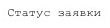 | Статус заявки |
| 13 | 0.961 | 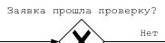 | Заявка прошла лрозерку? Нет |
| 14 | 0.990 | 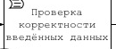 | Проверка корректности введённых данных |
| 15 | 0.945 | 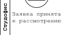 | Заявка принята рассиотренио |
| 16 | 0.960 | 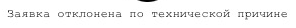 | Заявка отклонена по технической причине |
| 17 | 0.999 | 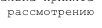 | 1 |
| 18 | 1.000 | 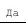 | Да |
| 19 | 0.995 | 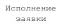 | Ислолнение заявки |
| 20 | 1.000 | 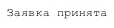 | Заявка принята |
| 21 | 1.000 | 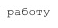 | работу |
| 22 | 0.910 | 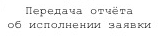 | Передача отчёта о6 ислолнении аявки |
| 23 | 0.993 | 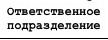 | Ответственное подразделение |